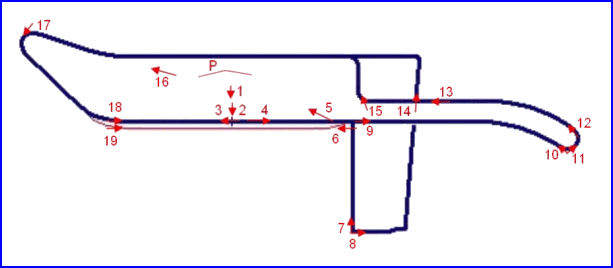

Norisring, Germany
Type: Street Circuit
Length: 1.429 Miles / 2.300 km
Photographs Taken: 1 August 2004
This short street circuit is located in the south-eastern suburbs of Nürnburg. It is based on the roads surrounding the Steintribüne, a large structure opposite the Zeppelinfeld, from which Hitler would make speeches during the second world war. The 'Noris' part of the circuit name is derived from the Latin name for Nürnberg. The present layout is simply two kinked straights joined at either end by hairpins, with a 'S' bend on the back straight. Despite its short length, the roads are wide which helps to encourage overtaking. The first races were held in the late forties and throughout the fifties for motorcycles, with sportscar races later introduced successfully during the sixties. Pedro Rodriguez was killed during the 1971 race, and the circuit was consequently shortened the following year. In the ninties, touring cars replaced the sportcars for the feature race.
|| Contents | Paddock and Grandstands | Start and Turn 1 | Turn 2 to Finish || Home ||

Numbers on the map represent the location of where the photos were taken. Click the
hyperlinks above to view the photographs.
Return to racingcircuits.net's Photo Archive Main Index
see also: Norisring Photographs by Michel Marti, July 2004
Photographs kindly supplied by Roelard Smit. Reproduced here with kind permission.